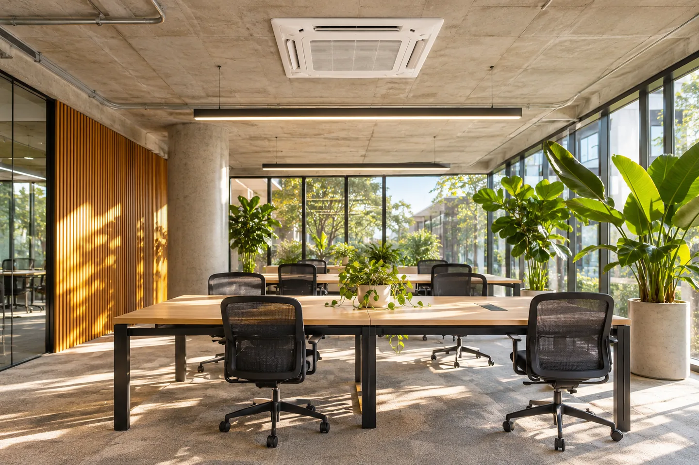

ClimaPro
Uma oferta.
Três formas de apresentar.
Explore as três versões da demonstração de manutenção empresarial.
Verde e terracota Plano de manutenção Clareza técnica Azul corporativo
Clareza técnica Azul corporativo

Arquitetura e conforto Apresentação editorialClareza técnica Azul corporativoEmpresa fictícia · Formulários de teste com dados fictícios · Nenhum contato será realizado.